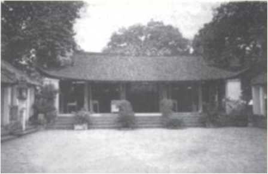

Giai Thoại 5

ách Đại Việt sử kí toàn thư (ngoại kỉ, từ tờ 4a đến tờ 5a) chép rằng:
“Cuối thời Hùng Vương, Nhà vua có người con gái gọi là Mỵ Nương, nhan sác rất xinh đẹp. Vua nước Thục nghe tiếng, bèn đến cầu hôn. Nhà vua đã muốn gả, nhưng Hùng Hầu can rằng:
- Chẳng qua họ muốn chiếm nước ta nên mượn việc cầu hôn để tạo ra cái cớ mà thôi.
Vua nước Thục vì thế mà để bụng oán giận. Nhà vua muốn tìm người xứng đáng để gả, liền nói với các bề tôi rằng:
- Đứa con gái này là giống Tiên, cho nên, chỉ ai đủ tài đức ta mới cho làm rể.
Bấy giờ, có hai người từ phía ngoài tiến vào, cùng lạy dưới sân xin cầu hôn. Nhà vua lấy làm lạ, hỏi thì họ thưa rằng, một người là Sơn Tinh, một người là Thủy Tinh, đều là ở trong cõi của Nhà vua cả. Nay, nghe tin Nhà vua có thánh nữ, bèn đánh bạo tới xin chờ mệnh của Vua. Vua nói:
- Ta chỉ có một người con gái, làm sao lại có thể có đến hai người rể hiền.
Nói rồi, bèn hạ lệnh cho hai người, rằng đến ngày hôm sau, ai đem đủ sính lễ tới trước thì sẽ gả con cho người ấy. Hai người nghe xong, lạy tạ rồi ra về. Hôm sau, Sơn Tinh đem các thứ châu báu bạc vàng cùng chim rừng thú núi tới dâng. Nhà vua y hẹn, gả con cho Sơn Tinh. Sơn Tinh đón vợ về trên đỉnh cao của núi Tản Viên. Thủy Tinh cũng đem sính lễ đến, nhưng muộn hơn, giận là đã đến trễ, bèn kéo mây làm mưa, dâng nước tràn ngập rồi đem các loài thủy tộc đuổi theo. Nhà vua cùng Sơn Tinh lấy lưới sắt chắn ngang khu vực thượng lưu sông Từ Liêm (tức khúc sông Hồng, chảy qua Chèm, ngoại thành Hà Nội - NKT) để ngăn lại. Thủy Tinh lại theo sông khác, từ vùng Lý Nhân vào chân núi Quảng Oai rồi men sông Hát và tràn ra sông Lớn (tức sông Hồng - NKT) mà ngoặt sang sông Đà để đánh lên Tản Viên, ở đâu (Thủy Tinh) cũng đào vực, đào chằm đề chứa nước hòng đánh úp Sơn Tinh. Sơn Tinh có phép thần biến hoá, sai người đan tre thành hàng rào chắn nước, lấy cung nỏ bắn xuống, khiến cho các loài thủy tộc đều bị trúng tên mà chạy trốn. Rốt cuộc, Thủy Tinh không sao xâm phạm được núi Tản Viên. Tục truyền, từ đó Sơn Tinh và Thủy Tinh đời đời thù oán, hàng năm vẫn dâng nước đánh lẫn nhau.

Đền và nhà thờ Thánh Tản Viên (Hà Tây)
Núi Tản Viên là dãy núi cao của nước Việt ta, sự linh thiêng rất ứng nghiệm. Mỵ Nương đã lấy Sơn Tinh, khiến cho vua của nước Thục cũng tức giận, dặn lại con cháu phải diệt Văn Lang mà chiếm cho được nước ta”.
Lời bàn:
Chuyện đầy những chi tiết bất hợp lí và hoang đường, nhưng giá thử ai đó có tài kể ngược lại, bỏ hết những chi tiết bất hợp lí và hoang đường, thì... chuyện sẽ chẳng còn là chuyện nữa.
Bồng bềnh giữa những lời hư ảo chính là cái gì đó phản ánh một cách vừa mơ hồ vừa rất rõ rệt về năng lực trị thủy của cổ nhân. Sừng sững giữa thiên nhiên khắc nghiệt, núi Tản Viên là biểu tượng của ý chí hiên ngang trước mọi thủy tai.
Chẳng có gì khó khăn khi tìm chỗ đúng sai của cổ tích, nhưng, làm như vậy phỏng có ích gì? Giữa bao la của trời đất, những người dân bé nhỏ vẫn tin là có thánh thần. Thánh thần cao cả mà vô tư, luôn cứu giúp tất cả những người lao động chân chính. Và đối với ngàn xưa, đó quả là một sức mạnh tinh thần hết sức lớn lao. Mà... sức mạnh tinh thần, có khi lại khoác áo cổ tích đầy vẻ hoang đường.
Trước mọi thủy tai, xin bạn hãy trông vời về đất tổ, nơi ấy có Sơn Tinh tức thánh Tản Viên, bạn tin hay không tin cũng vậy, khi thành kính hướng về đất tổ, nhất định bạn sẽ tự cảm thấy có một nguồn sức mạnh vô hình nào đấy, khiến bạn tự tin và phấn chấn hẳn lên. Cứ đợi thử mà xem!